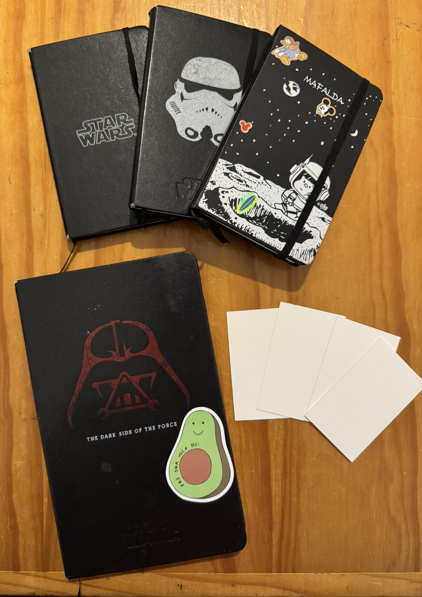
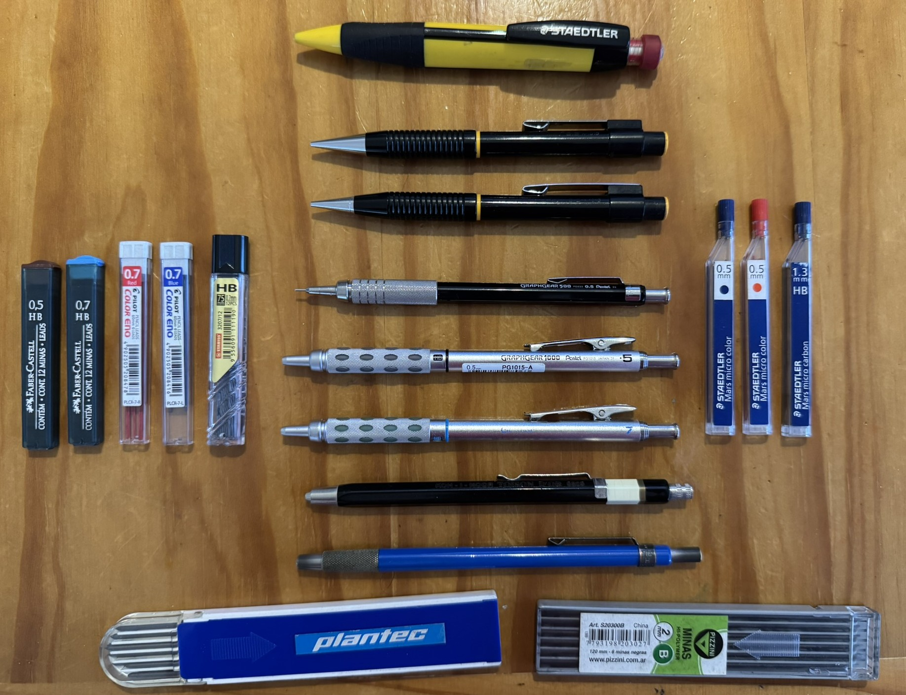
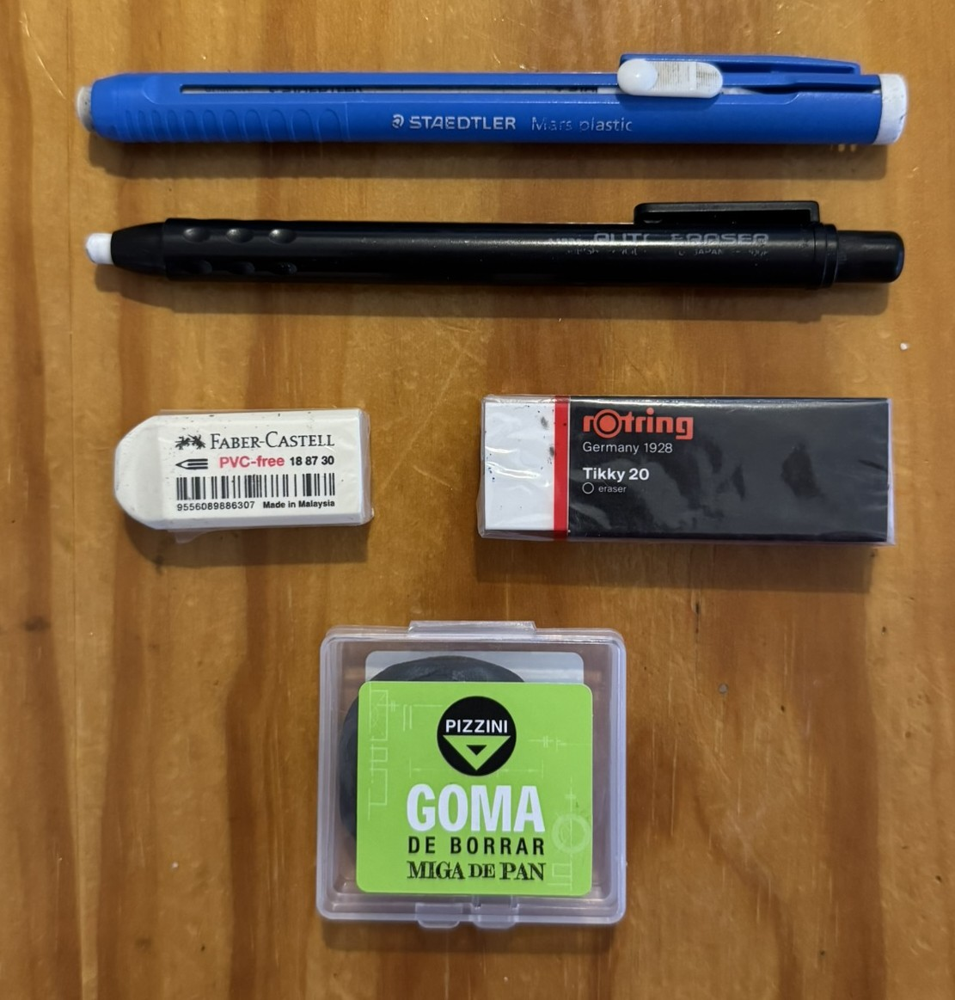
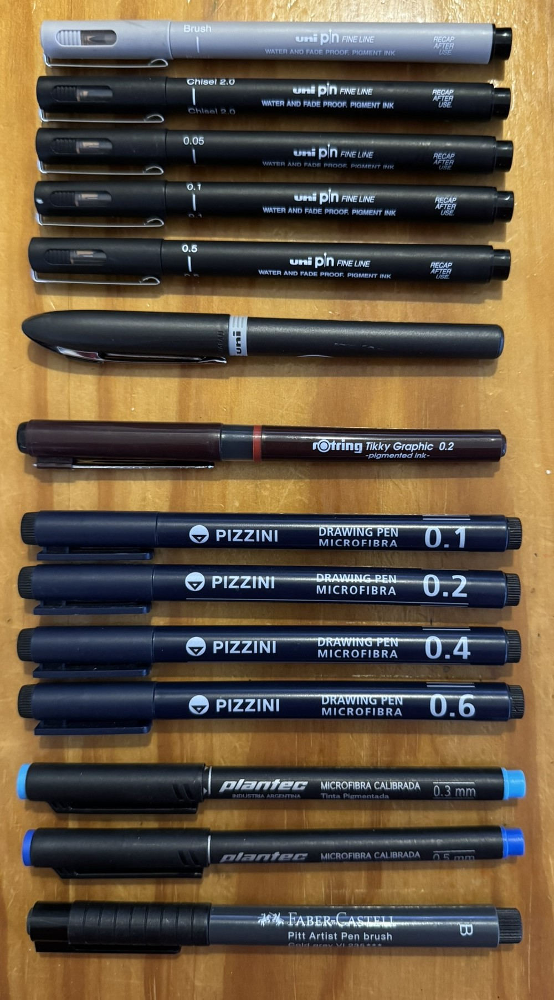
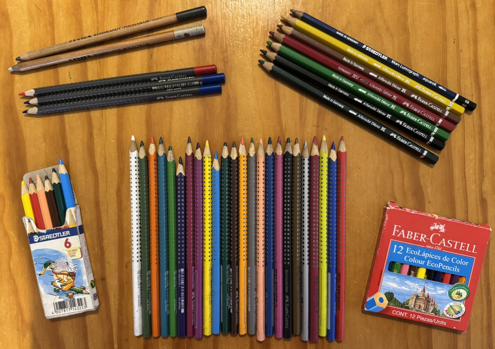
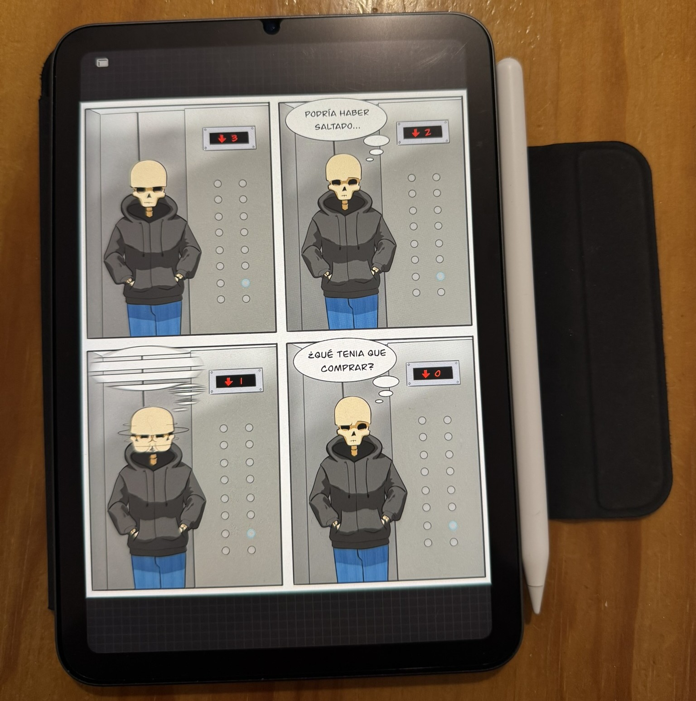

Recursos
Bibliografía y materiales recomendados para complementar los Tutoriales y Fundamentos.
Bibliografía
Algunas obras que consideramos son esenciales para aprender dibujo:
- El Método Loomis — construcción de la cabeza y figura.
- Andrew Loomis - Ilustración Creadora
- Andrew Loomis - Dibujo Tridimensional
- Andrew Loomis - Divirtiendose con el Lapiz
- Dibujo para Tontos
Materiales recomendados
Debajo puedes ver los materiales que recomendamos para tus prácticas de dibujo (ten en cuenta que esto es solo una sugerencia, para dibujar solo necesitas un papel y un lápiz/lapicera):
Materiales
Sketchbooks / Cuadernos de bocetosUn sketchbook es tu espacio seguro para experimentar: registrar ideas, practicar líneas, explorar composiciones y crecer sin la presión del "resultado perfecto". Al dibujar todos los días, tu mano gana memoria y tu ojo sensibilidad. En la imagen: 3 cuadernos A6 Brügge (lisos, 80 g/m²), 1 cuaderno A5 Brügge (liso, 80 g/m²) y hojas pequeñas de Block Áureo Plantec de 350 g/m² (cartulina rígida ideal para tinta/acuarela ligera). |
 |
|  |
Lápices (portaminas)Portaminas mostrados:
¿Por qué portaminas? Precisión constante, menos afilado y posibilidad de alternar durezas rápido (HB, 2B, etc.). Las minas gruesas (1.3–2.5 mm) son geniales para gestual y sombreados amplios. |
Gomas de borrarDistintos tipos para funciones específicas: de vinilo (limpias y precisas), miga de pan (amasables, levantan grafito sin dañar el papel) y portagomas tipo "lápiz" para correcciones finas. Elegir la goma adecuada cuida tu papel y tu trazo. |
 |
|  |
Microfibras / Marcadores técnicosVarias UNI (Brush gris, Chisel 2.0 negro, 0.05, 0.1, 0.5 y 0.7 Fine Line), Rotring Tikky Graphic 0.2, Pizzini, Plantec y Faber-Castell. Las puntas ultra finas definen contornos y detalles; las brush/chisel sirven para rellenos, caligrafía y variación expresiva de línea. Consejo: trabajá primero en grafito y entintá cuando tengas las formas resueltas; usá grosores distintos para jerarquizar planos. |
Lápices de colorFaber-Castell Eco Colour Grip (ergonómicos, buen agarre) y algunos acuarelables: permiten bocetar en seco y luego activar con agua para transiciones suaves. Ideales para estudios de color rápidos y diarios de bocetos. |
 |
|  |
Tableta gráficaiPad mini 6: compacto, preciso y suficiente para boceto digital, entintado, color plano y publicación. Complementa al cuaderno físico: prototipás rápido, probás paletas y corregís sin perder fluidez. |
Cuestionario didáctico
Poné a prueba tus conocimientos de Fundamentos y Tutoriales con este breve cuestionario.